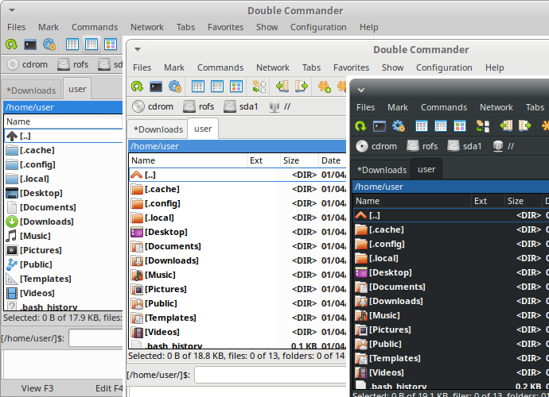
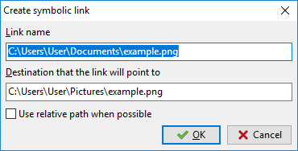
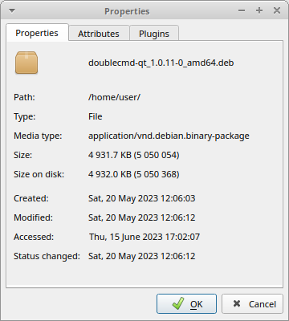
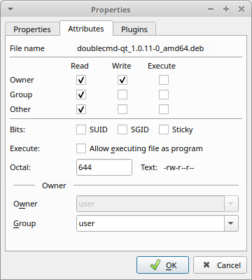
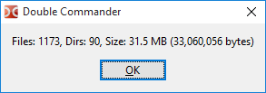
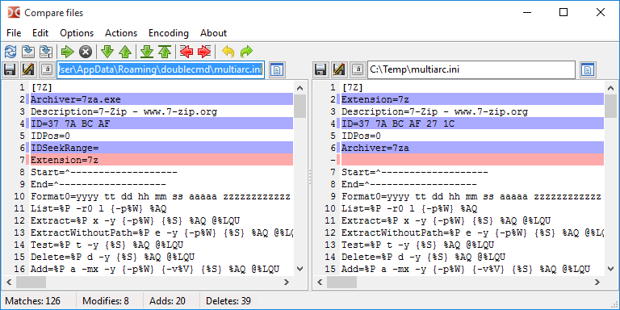
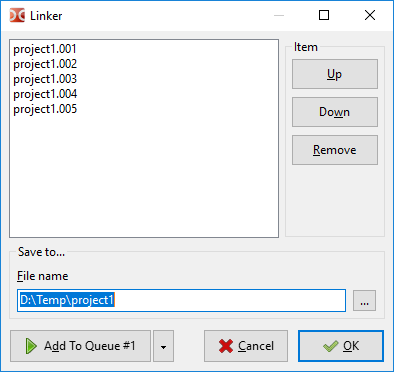
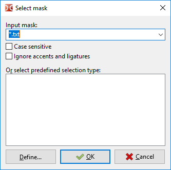
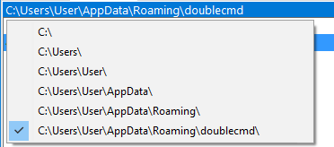
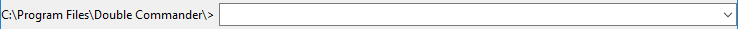

Welcome to Double Commander!
Double Commander – is a project started by Russian programmer Alexander Koblov (Alexx2000@mail.ru), as a fork of Sexi Commander (author – Radek Cervinka, radek.cervinka@centrum.cz).
There are several ways to get Double Commander:
The releases page on GitHub.
The releases page on SourceForge.
Double Commander is available in the repositories of many Linux distributions and in the FreeBSD Ports collection.
Double Commander has its own repository for several Linux distributions (the official repositories of Linux distributions do not always contain the current (latest) version of the program).
And you can build Double Commander yourself.
Version archive is also available.
First, you must choose which operating system (Windows, Linux, macOS(*)), processor architecture and then you may select the version to download.
For Windows there is an executable file .exe (Inno Setup) or .msi and an archive .zip (which is the so-called portable version).
For Linux there are versions based on GTK toolkit and based on Qt. Also portable versions are available (compiled binaries packed with XZ, use doublecmd.sh to launch).
Note: The features of the update of the portable version are described in the FAQ.
On the first launch Double Commander will automatically detect the system language, and set it for the interface. DC is translated into many languages. The language can be changed in the menu via Configuration > Options... > Language.
Double Commander determines and uses the current system theme. It looks like this (Ubuntu, three themes and two icon sets):

As can be seen from the figure, there are left file panel, a command line and a lower window that is a log viewer (it shows all the actions from the file manager). Double Commander also supports dark mode in Windows (Windows 10 1809 and newer).(Beta version)
Double Commander uses Total Commander plugin API, so under Windows you can use plugins from Total Commander (many of them are compatible with DC). See the description of the types of plugins in the Plugins settings section. DC is distributed with several pre-installed plugins, other plugins can be installed manually.
Double Commander's interface.

The Menu Bar provides access to all the features of Double Commander. But do not forget that the majority of actions can be performed in other ways: by using hot keys or buttons on the toolbar.
This menu contains almost all the actions that can be made on files. Please consider all the items:
Create Symbolic Link... (internal command cm_SymLink). With this item, Double Commander creates a symbolic link to the file under the cursor and places it in the folder opened in the opposite panel.

Link name – here is the path to the link and its name. The name is the last word after the last directory separator character in the line.
Destination that the link will point to – the object, on which the link is created.
Use relative path when possible – if possible, Double Commander will use the relative path to the object directory.
Create Hard Link... (internal command cm_HardLink). Like the symbolic link above, but link is hard and using a relative path will not be available.
Create Directory (internal command cm_MakeDir) – creates a new subdirectory in the current directory. The file name (without extension) or directory name under the cursor will be offered, this is useful for creating multiple directories with similar names. You can also create several subdirectories in one operation, just separate the subdrectories with the directory separator (in Unix/Linux system it will be "/" and in Windows it will be "\").
If Extended syntax(Beta version) is enabled, the <[] template can be used to insert the current date/time: inside square brackets you can use date and time formatting characters and any characters allowed for filenames.
Create Shortcut (Windows only) – Double Commander creates a shortcut (Microsoft Windows .lnk file) to the file under the cursor and places it in the folder opened in the opposite panel.
Change Attributes... (internal command cm_SetFileProperties) – allows to change timestamps and attributes (Windows) or file permissions (Linux and other Unix-like systems), including subfolders or not.
Show file properties... (internal command cm_FileProperties) will show the default "Properties" dialog (Windows) or Double Commander own dialog (Linux and other Unix-like systems) like this:



which indicates the file or folder name, size, write and last access time, and also owner and group. On the "Attributes" tab you can change the access to the file (if you have the rights to do so). The "Plugins" tab is optional and is only available if you have a suitable content plugin (in this case it was DEB). Also see description of <SystemItemProperties>.
Using item Edit comment... (internal command cm_EditComment) you can create or change file comments, which stored in a file descript.ion. Supports UTF, ISO, KOI and ANSI encodings. In the Miscellaneous settings section you can set the default text encoding.
Comments only work with normal files on the local file system, but not on remote or virtual file systems (e.g. on FTP server, in archive, etc.). In order for Double Commander to take into account the contents of descript.ion when copying or moving files, make sure that Process comments with files/folders is enabled in the File operations settings section.
Calculate Occupied Space (internal command cm_CalculateSpace) item calculates the size of selected objects in rounded units and in bytes.

Compare by Contents (internal command cm_CompareContents) shows a window with two panels with the files to compare (usually text).

It's a simple visual comparison and merging tool with a typical features: navigation between differences (next, previous, first or last), copying blocks of text from right to left and from left to right, editing files in-place, undo and redo the last changes, saving with a different name and other.
Options:
Auto Compare – Automatic comparison when changing the Ignore Blanks and Ignore Case parameters. And also when selecting a new file.
Ignore Blanks – If enabled, multiple spaces will counted as one.
Ignore Case – If enable, uppercase and lowercase will not be distinguished.
Line Differences – If enabled, differences within the lines will also be shown.
Binary mode – result is presented in binary form.
Keep scrolling – allows synchronized scrolling (vertical and horizontal).
Also see description of <Added>, <Deleted> and <Modified> parameters and Position of frame panel after the comparison.
The two files will be chosen as follows
If two files are selected in the active panel, they will be opened in the compare tool. The first selected file will be opened in the left panel of the comparison tool.
If only one file is selected, it will be compared with the selected file in the inactive panel.
If only one file is selected, and nothing is selected in the inactive panel, it will be compared with a file in the second panel, having the same name (if it exists) or with a file under the cursor.
If nothing is selected, the file under the cursor will be compared with a file in the other panel, having the same name (if it exists) or with a file under the cursor.
In the Tools > Differ section, you can set an external differ tool.
Multi-Rename Tool (internal command cm_MultiRename)

Allows renaming any files by defined mask. For example, some files with different names could be renamed into Picture1, Picture2, Picture3, etc. First, select files to be renamed and then start this tool (see figure above). There you can see the old and new names for your files. See this page for detailed descriptions.
By selecting item Pack files (internal command cm_PackFiles) we call a standard dialog to pack files to the zip, tar and other archive formats: the list of supported formats depends on the added packer plugins and external archivers (see Archive handling).

If the list of available formats is too long and does not fit in the window, Double Commander will bring them into the drop-down menu (in this case, use the checkbox with the "=>" label).
Also we can unpack files via Extract Files (internal command cm_ExtractFiles). The same dialog is called when you copy files from the archive.

In the Extract files matching file mask line, you can specify a mask, determining which files will be unpacked. The history of masks can be found in the drop-down list. The next line specifies the destination directory (where the archive will be unpacked). It can be changed manually or by clicking on the browse button at the far right.
Unpack each archive to a separate subdir (name of the archive) – If checked, Double Commander will create a folder with the same name as the archive in the destination directory and extract the files into this folder. You can extract several archives at once with this option and each will be extracted into its own folder in the target directory. The indeterminate checkbox state (three-state) enables the smart extract(Beta version): if there are several objects in the root of the archive, then the contents of the archive will be unpacked into a folder with the name of the archive, but if there is one object, then the contents will be unpacked as is. By default it is unchecked and its state is not saved for the next call of the extract command.
Unpack path names if stored with files – If checked, the directory structure in the archive will be kept. Otherwise, all files will be extracted without re-creating the directory structure.
Checkbox Overwrite existing files disables confirmation of overwriting existing files.
Test Archive(s) (internal command cm_TestArchive) will validate the integrity of the content of selected archive files or file under cursor. If archive content is corrupted, error message will be reported. The list of supported formats depends on the added packer plugins and external archivers.
Items Split file and Combine files (internal commands cm_FileSpliter and cm_FileLinker)

Split the file to directory – specifies destination folder for the split files. By default, the directory of the inactive file panel will be used.
The next group of parameters allows to select the size of the split parts or its number. You can enter your own value or use one of the presets:
1457664 B - 3.5" – Floppy drive 3.5;
98078 KB - ZIP 100 MB – ZIP drive;
650 MB - CD 650 MB – CD drive size;
700 MB - CD 700 MB – CD drive size;
4482 MB - DVD+R – DVD drive size.
If you use the Number of parts parameter, the size of the parts is always displayed in bytes.
If Require a CRC32 verification file is enabled, Double Commander will create a text file with the name of the source file and the extension ".crc", which contains the name of the source file, its size and checksum (the CRC32 algorithm is used). This is an easy way to check that the file is combined correctly and its parts have not been changed during the move. If this file is not available, Double Commander will show a warning, but this will not prevent you from getting the original file (however, in this case, the program will not be able to add the original file extension).
On click OK button you get several files in the target directory. As a file extension, Double Commander uses sequential numbering of three or more (if it is needed) digits. To combine the file again, select the first part and click Combine files (cm_FileLinker). Or select all parts, you can also specify the order of split parts to combine.

This function is very useful, if you have small drives and large files. It is possible to move the file parts. Keep in mind, this tool does not create any specific container or archive, but just splits or glues the file, so parts of the file can be obtained and safely glued together by other programs.
Item Calculate check sum... (internal command cm_CheckSumCalc) is used to calculate the checksum to check files integrity. The following checksums are available: BLAKE2 (BLAKE2s, BLAKE2sp, BLAKE2b, BLAKE2bp), BLAKE3, CRC32, HAVAL, MD4, MD5, RIPEMD128, RIPEMD160, SFV, SHA, SHA2 (digest sizes 224, 256, 384 or 512 bits), SHA3 (digest sizes 224, 256, 384 or 512 bits), Tiger/192.

Save checksum file(s) to: – line specifies name and path to the calculated checksum.
Create separate checksum files for each file – if checksum calculates for multiple files, this option allows to create separate checksum files for each target file.
Choose your preferred checksum and – select algorithm which will calculate checksums.
Item Verify Checksum... (internal command cm_CheckSumVerify) will start verification the list of checksums from the checksum file under the cursor. Also you can run this command by double mouse clicking on the checksum file (or using the Enter key).
Double Commander can check files one by one: select the file, run this command, now enter its checksum (or paste from the clipboard) and select the algorithm.
You can use checksum files, which generated by other programs, but first make sure Double Commander supports their algorithm and format.
Item Wipe (internal command cm_Wipe) for secure deletion (shortcut Alt+Del by default): before deleting from the hard disk, the selected file will be renamed with a random name, and its contents will be overwritten with zeros, ones or random data. You can set number of wipe passes in Configuration > Options... > File operations. Directories and links will just be renamed before deleting.
Item Delete (internal command cm_Delete) – will delete the selected files or the file under the cursor to trash (recycle bin) or permanently. By default, Double Commander moves files to trash, you can change this in Configuration > Options... > File operations. Deleting to trash can might not be available for all platforms.
To delete files inside archive (in this case the files will be deleted directly), you need to add a suitable WCX plugin or configure an external archiver, also the archive format must support the delete operation.
Item Exit (internal command cm_Exit) – closes Double Commander.
There are some commands in this group with which you can select files in different ways.
First and second items Select a Group and Unselect a Group (internal commands cm_MarkPlus and cm_MarkMinus). These commands select groups of files by a mask. With this mask you can specify file names or extensions.

E.g. select all files that have the extension .txt. Also there is a drop-down list with masks history.
Third and fourth items Select All (internal command cm_MarkMarkAll) and Unselect All (internal command cm_MarkUnmarkAll). They make it possible to select or unselect all items from the panel quickly.
Fifth item is Invert Selection (internal command cm_MarkInvert). It makes currently selected files unselected and vice versa.
Sixth and seventh items Select All with the Same Extension (internal command cm_MarkCurrentExtension) and Unselect All with the Same Extension (internal command cm_UnmarkCurrentExtension). These functions help to select and unselect files with the same extension as the file under the cursor.
Eighth and ninth items Save Selection (internal command cm_SaveSelection) and Restore Selection (internal command cm_RestoreSelection). The first command will save in internal buffer current selected items. Then later, the second command could be use to re-select again the same items that were selected before.
Tenth and eleventh items Save Selection to File (internal command cm_SaveSelectionToFile) and Load Selection from File (internal command cm_LoadSelectionFromFile). Like the previous commands, but using a plain text file (one filename per line).
Twelfth item is Load Selection from Clipboard (internal command cm_LoadSelectionFromClip). Will select files and folders by the list from the clipboard (one filename per line).
Thirteenth and fourteenth items Copy Filename(s) to Clipboard (internal command cm_CopyNamesToClip) and Copy Filename(s) with Full Path (internal command cm_CopyFullNamesToClip). First command copies the selected file list to the clipboard, second copies too, but with full file paths.
Fifteenth item is Copy all shown columns (internal command cm_CopyFileDetailsToClip). Will copy file information of selected items onto the clipboard: one file per line and the contents of the columns will be tab-delimited.
The last item is Compare Directories (internal command cm_CompareDirectories). Will select the items, in both active and inactive panels, that are not present in the opposite panel (by default only files will be selected). Files with the same names will be compared by modification date, after that, newer files will be selected.
First item is Search (internal command cm_Search). This tool is designed to search for files and folders at the specified criteria. Can also be used to search by file content. See this page for detailed descriptions.
New search instance... (internal command cm_AddNewSearch) – opens a new instance of Search dialog window with default settings. It will also allow to launch a new search instance to search something else while a long search is in progress.
View current search instances (internal command cm_ViewSearches) – will show a window with a list of search instances with brief information (status, number of files found, if finished, and file mask) and the ability to switch to one of them.
Fourth item is Directory hotlist (internal command cm_DirHotList). This command is the same as pressing the "*" button.
Selecting this item we get a popup menu with the Directory Hotlist, in which we can choose:
switch current path of active frame to a pre-configured directory from a list your made;
add new bookmark: current directory, selected directory (more than one if needed) or directory under cursor;
configure existing bookmarks.
Please see the dedicated Directory Hotlist help page about how to use and configure it.
Synchronize dirs... (internal command cm_SyncDirs) open the directory synchronization tool: the directories of the left and right panel will be scanned, you will see the differences in their content and you can make them the same.
Run Terminal (internal command cm_RunTerm) opens a terminal at the current directory (settings at Tools).
Execute internal command (internal command cm_DoAnyCmCommand) opens a window with a list of all internal commands and their description. Commands are grouped by category, quick filter and sorting are available: you can execute the selected command, copy its name, or open the Internal commands page (some commands support parameters).
Flat view (internal command cm_FlatView) will scan all the directories of panel to show all content in one single panel.
Open VFS List (internal command cm_OpenVirtualFileSystemList) will open a list of added file system plugins (WFX plugins) that use their own file systems or provide access to other file systems and devices (local or remote). As well as virtual folders:
Computer(Beta version) – contains a list of normal disks with a drive letter and devices that do not have a drive letter (for example, USB devices that are connected via the MTP protocol, i.e. smartphones, tablets or players). Windows only.
Linux(Beta version) – list of all Linux distributions that you added to WSL and their root file systems (Windows 10 and newer).
Network – used to access shared network resources (Windows only).
Recycle Bin – used to access files deleted to trash.
(The list is sorted alphabetically and depends on the language settings of the system and the program.)
Swap Panels (internal command cm_Exchange) swaps left and right file panels with all opened tabs.
Target = Source (internal command cm_TargetEqualSource) opens the same directory in the inactive file panel.
Show Occupied Space calculates and shows the total size of all files in the sub-folders of the current directory. The <DIR> text in the Size column of the active panel is replaced with the total size.
Network Connect – will open a list of added file system plugins (WFX plugins), as the Open VFS List command in the "Commands" menu.
Network Disconnect – will close the active network connection. Double Commander will close one of the following connections (in descending order of priority):
opened in the active panel;
opened in the inactive panel;
last created.
The next items are for Windows only.
Map Network Drive and Disconnect Network Drive – will call the Windows system dialogs to connect and disconnect network drives.
Copy names with UNC path – will copy the full file name on the network to the clipboard: server name, share name, and relative file path.
This group manages the tabbed file panels.
New Tab (internal command cm_NewTab) – adds a new tab on the active panel (with the current path) and switches to it.
Rename Tab (internal command cm_RenameTab) – allows to change the title of the current tab.
Open Folder in a New Tab (internal command cm_OpenDirInNewTab) – opens a new tab for the directory under the cursor, but does not switch to it (i.e. in the background).
Close Tab (internal command cm_CloseTab) – closes the active tab and switches the panel to the next tab (or the previous tab, if you close the last tab).
Close All Tabs (internal command cm_CloseAllTabs) – closes all inactive tabs. If they consist of locked tabs, it will prompt for confirmation.
Close Duplicate Tabs (internal command cm_CloseDuplicateTabs) – Double Commander will check the list of opened tabs and close duplicate tabs (separately for each panel!), only the first of them will be saved (counting from the left).
Tab Options – Using this submenu you can change the state of the tab:
Normal (internal command cm_SetTabOptionNormal) – will make the tab normal: the usual tabs that Double Commander creates by default.
Locked (internal command cm_SetTabOptionPathLocked) – makes the tab locked, trying to change to another directory within this tab will prompt to open in a new tab.
Locked with Directory Changes Allowed (internal command cm_SetTabOptionPathResets) – if you lock a tab with this method, you can change to another directory within this tab, but after switching to another tab (or Double Commander is restarted) the tab will revert to the locked tabs original directory.
Locked with Directories Opened in New Tabs (internal command cm_SetTabOptionDirsInNewTab) – When you try to enter in any directory inside the panel, that one will be opened in a new tab.
The rest of the items of this submenu will do the same, but for all tabs at once.
Note: By default, Double Commander will not allow to close a locked tab without confirmation (Confirm close locked tabs in the Folder tabs settings section).
Switch to Next Tab (internal command cm_NextTab) and Switch to Previous Tab (internal command cm_PrevTab) – respectively switches to the tab on the right (next) and to the tab on the left (previous).
Save Tabs to File (internal command cm_SaveTabs) and Load Tabs from File (internal command cm_LoadTabs) – The names of the current tabs and their associated directories can be saved in a .tab file and loaded from such a file.
Save current tabs to a New Favorite Tabs (internal command cm_SaveFavoriteTabs) – will save in the set of Favorite Tabs the current opened tabs. Later on, on request, you may reload these saved setup using the next menu item.
Load tabs from Favorite Tabs (internal command cm_LoadFavoriteTabs) – will show a popup menu with the ability to select one of the previously saved sets of tabs.
The last two items are for quick jump to the folder tabs and Favorite Tabs settings sections.
This menu contains a list of your saved Favorite Tabs and some commands for working with them.
Favorite Tabs are saved sets of tabs that grouped according to criteria convenient for you (work, projects, hobbies, and so on), they allow to open all the necessary directories in tabs at once.
Save current tabs to a New Favorite Tabs (internal command cm_SaveFavoriteTabs) – will save in the set of Favorite Tabs the current opened tabs.
Resave on the last Favorite Tabs loaded (internal command cm_ResaveFavoriteTabs) – will resave the current tabs configuration over the last loaded Favorites Tabs entry.
Reload the last Favorite Tabs loaded (internal command cm_ReloadFavoriteTabs) – reload again the last Favorite Tabs setup that was loaded, i.e. this command is used to restore a saved set "as is".
The next item Configuration of Favorite Tabs is for quick jump to the Favorite Tabs settings section.
To unload the last loaded Favorite Tabs, use the cm_LoadFavoriteTabs command with setup="" (add a button to the toolbar or a hotkey). The currently open tabs will not be affected, this command will just unload the name of the used set of Favorite Tabs from memory and Double Commander will continue to work as usual.
Manages the displayed contents of the file panels.
The first three items allow to switch the view of the file list: Brief view (internal command cm_BriefView), Full (internal command cm_ColumnsView) and Thumbnails (internal command cm_ThumbnailsView). See below for details.
Quick View Panel (internal command cm_QuickView) – opens file in viewer program, but content of selected item shown in opposite panel (instead of a separate window). In this case, the viewer specified in the file association settings will be ignored. As we navigate to next items, displayed content is updated, this allows to view the contents of files simply by moving the cursor in the file panel.
Tree View Panel (internal command cm_TreeView) – shows the directory tree for the active file panel. Internal command cm_FocusTreeView switches focus between current file list and tree (shortcut Shift+Tab by default).
The next five items: Sort by Name (internal command cm_SortByName), Sort by Extension (internal command cm_SortByExt), Sort by Size (internal command cm_SortBySize), Sort by Date (internal command cm_SortByDate), Sort by Attributes (internal command cm_SortByAttr) – allows to choose different sorting orders for the files. Also you can click the left mouse button on the column headers to change the sort order.
Reverse Order (internal command cm_ReverseOrder) – invert the sort order for the active panel.
Refresh (internal command cm_Refresh) – Double Commander will reread the contents of the directory in the active panel.
Show Hidden/System Files (internal command cm_ShowSysFiles) – controls the display of files and folders, which have the "hidden" or "system" attribute (Windows) or the name with a dot character in the beginning (Linux and other Unix-like systems). Same as the setting in the configuration – Show system and hidden files.
Horizontal Panels Mode (internal command cm_HorizontalFilePanels) – sets the position of file panels: two vertical ones disposed in left/right or two horizontal ones disposed in top/bottom.
Operations Viewer (internal command cm_OperationsViewer) – shows a window with a list of file operations. You can change the order of operations in the queue, stop or pause a task.
First item is Options (internal command cm_Options), it opens the "Options" window, see description on dedicated help page.
Other items: quick jump to some settings sections (Directory Hotlist, Favorite Tabs, file associations, folder tabs and archivers) and commands Save Position and Save Settings.
Here you can get help information (this documentation) and information about the program:
Contents – opens help index page.
Keyboard – opens keyboard shortcuts page.
Visit Double Commander Web page – go to project homepage if you are online.
About – shows information about the program version and the developers.

The toolbar is holding buttons to execute internal command and launch our applications.
A default configuration is propose but we will certainly each and every one configure it to our needs since it's probably the most configurable part of Double Commander.
That's why a dedicated page is made just for that under this link.

The Drives button bar helps you to change the drive quickly with one mouse click. Middle mouse (mouse wheel) click will open the disk in a new tab in the active panel.
Right click shows the context menu that contains operations such as mount/unmount, format, etc. (depends on the OS and drive type).
The last button is Open VFS list.

Helps to change drive, also contains additional information (size, free space) and navigation buttons – « * \ .. ~ < ».
Internal commands are cm_LeftOpenDrives for left panel and cm_RightOpenDrives – for right panel. Default shortcuts: Alt+F1 and Alt+F2, but they won't work in most Linux Desktop Environments, just replace them.
Internal command cm_SrcOpenDrives will show this menu for active panel.
Additional navigation buttons:
"*" – shows the bookmarks hotlist, see the dedicated Directory Hotlist help page for details;
"\" or "/" – go to the root of the current drive (Windows) or to the file system root (Linux and other Unix-like systems). Exceptions:
".." – go to the parent directory;
"~" – go to your home directory;
"<" and ">" – commands cm_LeftEqualRight and cm_RightEqualLeft.

Display tabs. Click on tabs with left mouse or you can use the keyboard to navigate tabs (Ctrl+Tab and Ctrl+Shift+Tab by default). To change the order of the tabs, use drag & drop or the cm_MoveTabLeft and cm_MoveTabRight commands(Beta version).
You can protect tabs from closing or changing the directory, the available tab states are described in the "Tabs" subsection. Locked tabs are marked with an asterisk (if Show locked tabs with an asterisk * is enabled).

Displays the name of the current directory. A left mouse click on this directory bar drops down a directories history (internal command cm_DirHistory) which allows to quickly navigate back to previous directories:

A right mouse click on the directory bar will allow to copy the pathname to the clipboard or enter a new path manually (environment variables are supported, in Unix-like operating systems also you can use the tilde symbol "~" to indicate the current user's home directory). A double click or middle mouse click drop down a directory hotlist.
It is now also possible to click on parts of the directory bar to quickly navigate back in the directory structure. Very handy if you want to go to a parent directory back many levels. This is known as a "breadcrumb" navigation feature.
Shows the column names. On left click sorts files by column. A small arrow to the left of the header text shows the sort direction. Also you can set the sort order for multiple columns by clicking on the header while holding down the Ctrl key. For example, try to sort files by extension, now click on the "Date" header with the Ctrl key: each file type will be sorted by date independently of the others.
The tabstop headers bar allows to change the width of the columns using the mouse, by default DC changes it for both panels and saves a new value for the next launches (see <AutoSaveWidth>).
On right click shows a menu to change and edit custom column style set.

Default, File count – existing styles.
Configure custom columns – opens Files views > Columns > Custom columns section.
The file panels display the names of the files in the current directory. Double Commander can arrange the file panels vertically (left/right, default) or horizontally (top/bottom), use the Horizontal Panels Mode item in the Show menu or Ctrl+Shift+H.
By default, the width of both panels is the same. The size is set as a percentage for the left (or top) panel, there are several ways to change it: just drag the panel separator with the mouse (the program will display the width of the left panel in the tooltip), use the right mouse button menu with fixed size ratios (20/80, 30/70, 40/60, 50/50, 60/40, 70/30, 80/20) or the cm_PanelsSplitterPerPos command.
General parameters for displaying the contents of file panels are collected in the Files views and Files views extra settings sections.
Several file list view modes are available.
Full – one file per line, with default or user defined columns. Instead of the size for folders and links, Double Commander displays <DIR> and <LNK>. Options are available in the Columns settings section, you can add or change column sets in the Custom columns section. The columns view is used in most illustrations.
Brief view – just the name of the files. If possible, more than one column. Options are available in the Files views > Brief settings section.
Thumbnails – files shown as small images. If possible, in more than one column. You can change the size of the thumbnails in the Miscellaneous settings section.
Double Commander can use the capabilities of the operating system to create thumbnails or create them itself. You can choose to allow the thumbnail cache to be saved to disk, or to keep it in memory only until the program is closed (see Miscellaneous).
The methods of creating thumbnails and the supported file formats depend on the family of the operating system.
Windows: Double Commander uses the capabilities of the operating system (as in Windows Explorer), WLX plugins with thumbnail creation support and supplements the list with image formats that are supported by the built-in viewer.
macOS(*): Double Commander uses the capabilities of the operating system (Quick Look) and supplements the list with image formats that are supported by the built-in viewer. The program also supports the OpenDocument format (.odt, .ods, .odp, .odg) and will try to create thumbnails (if files contains "Thumbnails/thumbnail.png") before using the Quick Look API.
Linux and other Unix-like systems: Double Commander creates thumbnails for the following formats:
image formats that are supported by the built-in viewer;
XCF image format (if ImageMagick library is available);
some popular video formats (if FFmpegthumbnailer library is available): .avi, .flv, .mkv, .mov, .mp4, .mpeg, .mpg, .vob, .webm, .wmv;
embedded cover art of MP3 files;
OpenDocument format (if files contains "Thumbnails/thumbnail.png"): .odt, .ods, .odp, .odg.
Double Commander also creates thumbnails for text files (plain text and other non-binary files). Thumbnails of these files are not saved to disk.
Double Commander can display file icons to the left of their names (enabled by default), which show file types and associations (system or internal) with programs. DC uses icons from its own icon theme and/or according to system settings (see the Icons settings section).
The program also allows to specify file types whose names should be a different color, see the Colors > File types settings section for more details.
The current file will be surrounded by a fine rectangle, with or without color fill, the names of the selected files will be displayed in red. You can change the colors used and appearance of the cursor in the Colors > File panels settings section.
Double Commander can show a tooltip when the mouse cursor is hovering over a file, see the Tooltips settings section for details.
There are several ways to select files.
To select a file or directory under the cursor, simply press the Insert key (after selection, Double Commander will automatically move the cursor to the next file) or the Space key. If you select a directory using the Space key, the program will calculate the total size of the directory and show it in the appropriate column.
You can choose left or right mouse button to select files:
Left button – The mouse works as in Windows Explorer, the right button is only used to open the context menu. In this mode, you can deselect all selected files by clicking on the name of any unselected file or on the ".." item. Also you can use the appropriate internal command (see below).
Right button – The left button works the same way, the right button allows to select files by clicking on the file name. A slightly longer hold of the right button will call the context menu of files. To select several consecutive files, you can hold down the right mouse button and move the mouse cursor over the list of files. To deselect all selected files, you can use the appropriate internal command (see below).
You can use a mouse click with modifier keys: Ctrl (select the next file, anywhere in the list) and Shift (add several consecutive files to selection). To select several consecutive files, you can hold down Shift and use the up and down keys.
It is also possible to select files by clicking on their icons, you can enable this function in the Mouse settings section. At the same time Double Commander will move the cursor to the selected file, as when using a mouse click with the Ctrl key. This way in thumbnail view works when you click on left part (1/4 or 25%) of image, so you can set cursor without selection by mouse clicking on right image part. This function is convenient to use to deselect a large number of files: click on the icon of any selected file and then on its name.
You can completely disable selection with the mouse: the left button will only set the cursor, the right button will call the context menu.
Special commands are available for selecting and deselecting files, which allow to use different conditions: by name or part of the name, file type, attributes and more. Some of them have been added to the Mark menu, you can assign hotkeys or add buttons to the toolbar. Or open a window with a list and description of all internal commands (internal command cm_DoAnyCmCommand, Shift+F12 by default) and go to the Mark category.
Double Commander supports the ability to drag and drop files using the mouse (that is, with the left mouse button pressed) to the windows of external applications (for example, a text or graphics editor or viewer), to the toolbar and copying/moving files between directories. If the action is possible, the "+" symbol will be displayed near the mouse cursor.
When dragging a file to an empty place on the toolbar, a button with an external command will be created, the passed file will be used as a command. Dragging a file to a button is only possible if it is a button with an external command: the command will launched and the file will be passed to it as a launch parameter.
For file copy or move (using the Ctrl or Shift key) operations, the following targets are possible: the opposite file panel, any folder in the active or inactive panel (the folder name will be highlighted with a frame), the directory of any open tab (just drop the files on the header of the desired tab). Use ".." to copy files to the parent directory. Double Commander can also copy files to an archive if adding files is supported.
If more than one file is selected, press the modifier key after the start of dragging.
Dragging using the right mouse button will show the menu with the following actions: Copy, Move, Create link (hard link), Create symlink and Cancel. If several files are selected, Double Commander will offer to create a link only for the first file in the list.
You can create a symbolic link using Ctrl+Shift.
When you drag files to the window of another application, Double Commander uses the system implementation of drag & drop. Using the Alt key, you can call an alternative action (for example, when dragging a file into the Windows Explorer window, a shortcut will be created instead of copying the file).
The appearance and contents of the context menu of files (the right mouse button menu) depend on the family of the operating system. In Windows Double Commander uses the system context menu (as in Windows Explorer) with the "Actions" submenu (see below), in other operating systems Double Commander creates its own context menu with typical actions. If you prefer to use the right mouse button selection mode, then a slightly longer hold of the right button will be required to call this menu. You can use the internal command cm_ContextMenu to call the context menu (Shift+F10 by default).
Context menu of Double Commander in Linux and other Unix-like systems:
Open – Open the file under the cursor in the default program (system file associations will be used).
The Actions submenu – contains all the actions added to the file association for files with the file extension under the cursor. Also you can add a few additional actions.
The Open with submenu – contains a list of applications suitable for opening a file. To get the list in macOS(*), Double Commander uses the Launch Services API, in other systems the program follows the Desktop Menu specification.
The additional item Other... (not available in macOS(*)) will open the application selection window: you can choose an application from a list of all available applications or manually specify the command line to open the file. Also here you can save an additional system association for the file type, add a new one or change the default application (Double Commander will use the ~/.config/mimeapps.list file (see Association between MIME types and applications).
Services – system services (macOS(*) only).
Pack here... – calls the command to pack the selected file(s), the current directory will be used as the target directory.
Extract here... – calls the command to unpack the selected file, the current directory will be used as the target directory. This item will be added only if the file extension is specified in the settings of archiver plugins or external archivers.
Calling basic file operations: Move (F6), Copy (F5), Delete (F8), Rename (F2).
Commands for copying and moving files using the clipboard: Cut, Copy, Paste
Show file properties – Show file properties window.
Clicking the right mouse button on an empty space in the file panel in Linux and other Unix-like systems calls a menu with the following items:
Refresh – the command to reread the contents of the directory in the panel.
The Sort by submenu – contains commands for switching the sorting method: by name, file extension, size, modification date or attributes. Also added the Reverse Order command which switches the sorting direction.
Paste – used to copy and move files using the clipboard.
The New submenu – contains commands for creating a directory (F7) and a text file (Shift+F4). Also this submenu contains templates for new files, if the system directory with templates exists and is not empty (not available in macOS(*)).
Show file properties – Show the properties window of the current directory.
Context menu inside an open archive or a file system plugin (WFX) is always the same and does not depend on the operating system:
Open – Open a file in the default program, as when using a double-click or pressing Enter (internal and system file associations will be used). By default inside archives this command will show the properties window of the packed file (see Archive handling) where you can choose to open a file in an associated program, but Double Commander allows to configure the automatic opening of file in the associated program directly (use <AutoExtractOpenMask>).
View – Open file in viewer (F3).
Calling several file operations: Copy (F5), Rename (F2) and Delete (F8).
Show File Properties – Show file properties window. The content depends on the capabilities of the virtual file system. Inside archives, this will be the properties window of the packed file (see Archive handling).
Keep in mind that not all menu items will work in every case. For example, if some archive format does not support deleting files, Double Commander will ignore the choice of the Delete command.
When using the quick search/filter tool, its panel is displayed at the bottom of the file panel. Quick search is used to search through the current contents of the file panel: the cursor will be moved to the nearest matching file and when using the up arrow and down arrow keys, the program will move the cursor in a circle only over files whose names match the conditions. Quick filter will hide all file names that do not match the conditions (to reset the filter, use the Esc key or the "X" button).
Double Commander supports pinyin (the pinyin.tbl file in the program directory will be used).
You can set the way of call the quick search/filter panel in the Keys settings section, or use the cm_QuickSearch and cm_QuickFilter commands.
All parameters that have been changed in the quick search panel will be kept for the next quick search/filter call (before closing the program), you can change it and the default values in the Quick search/filter settings section.
Filter – search/filter switch;
{ – name must start with first typed characters;
} – last characters before a typed dot "." must match;
Aa – case sensitive;
F – filter files;
D – filter directories;
X – disable quick search and close the panel.

Shows some details about the contents of the file panel.
If the columns view is set, the status bar displays the size of the selected files and their number and the total number and size of files in the panel.
If the brief view or thumbnails view are set, the file name under the cursor, its size, modification date and attributes are displayed here. If there are files selected, the status bar displays the same information as in the columns view.
If the flat view (without subdirectories) is enabled, then the file name under the cursor is displayed here with a relative path. If there are files selected, the status bar displays the same information as in the columns view.

Use to enter commands manually. Path to active directory shows in line beginning (C:\Program Files\Double Commander\ in screenshot). The button on the right with an arrow opens the history of the entered commands. Use Shift+Del to remove unnecessary entries from the history.
Double Commander independently handles the "cd" command, you can use it to change the current directory in the active panel. If you use a path with the file name, Double Commander will place the cursor on this file.
In Windows, you can change the drive by simply specifying the drive letter and a colon: c:, d: and so on.
Environment variables are supported, in Unix-like operating systems also you can use the tilde symbol "~" to indicate the current user's home directory.
Several internal commands are available for working with the command line.
Right mouse click will show the usual input box menu that contains standard commands Cut, Copy, Paste, Delete, Select All and submenu Insert Unicode Control Character.

Displays F3-F9 hotkeys. Enables you to select commands with a mouse click.
Created by Rustem (dok_rust@bk.ru)
English version by Rod J (rodmac_shiels@hotmail.com)